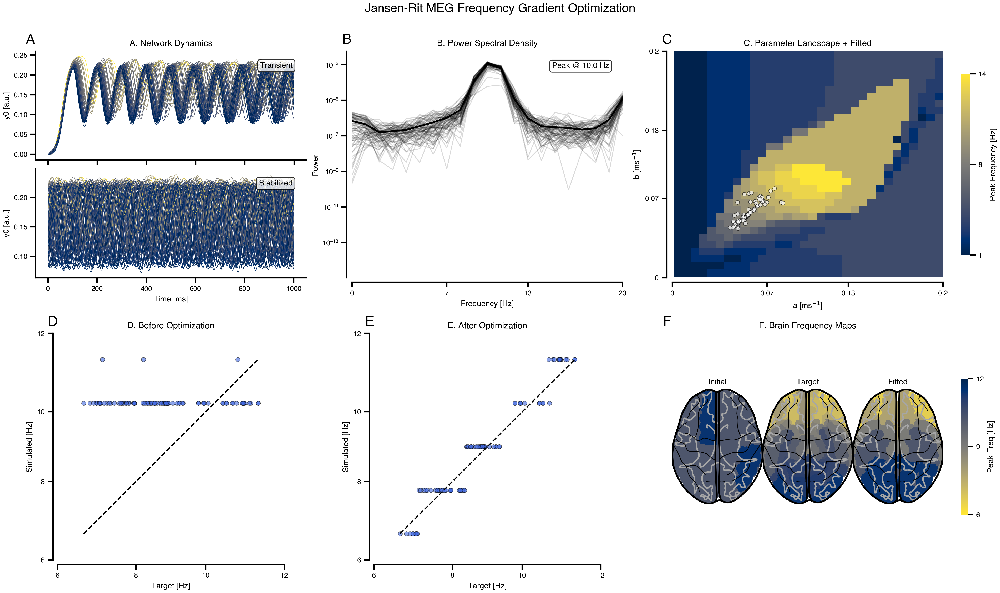
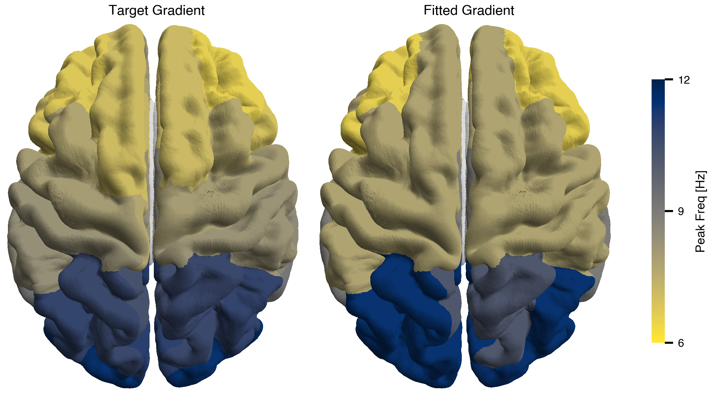

import os
os.environ["XLA_FLAGS"] = "--xla_force_host_platform_device_count=8"
from tvbo import SimulationExperiment, Network
from tvboptim.data import load_structural_connectivity
import bsplot
from matplotlib.colors import Normalize
import matplotlib.pyplot as plt
import nibabel as nib
import numpy as np
import pandas as pd
# Load experiment and network
exp = SimulationExperiment.from_db("JR_MEG_FrequencyGradient_Optimization")
print(exp.render_code('tvboptim'))Jansen-Rit MEG Frequency Gradient Optimization via tvboptim
Reproducing MEG resting-state frequency gradients using network dynamics. Fits region-specific Jansen-Rit parameters (a, b) to match target peak frequencies from visual cortex (11 Hz) to association areas (7 Hz).
weights, lengths, region_labels = load_structural_connectivity(name="dk_average")
# Load atlas for brain mapping
import tvboptim.data
_dk_data = os.path.join(os.path.dirname(tvboptim.data.__file__), "plotting", "dk_average")
dk_info = pd.read_csv(os.path.join(_dk_data, "fs_default_freesurfer_idx.csv"))
dk = nib.load(os.path.join(_dk_data, "aparc+aseg-mni_09c.nii.gz"))
dk_info.drop_duplicates(subset="freesurfer_idx", inplace=True)
region_labels = np.array(region_labels)
idx_l = np.where(region_labels == "L.LOG")[0]
idx_r = np.where(region_labels == "R.LOG")[0]
dist_from_vc = np.array(np.squeeze(0.5 * (lengths[idx_l, :] + lengths[idx_r, :])))
f_min, f_max = 7, 11
delta_f = (f_max - f_min) / (dist_from_vc.max() - dist_from_vc.min())
target_peak_freqs = f_max - delta_f * (dist_from_vc - dist_from_vc.min())
# Run initial simulation to get frequency axis from actual PSD computation
ns = exp.execute("tvboptim")
sim_init = exp.run("tvboptim", mode="simulation")
frequencies = np.array(sim_init.integration.observations.simulated_psd.frequencies)
# Compute target PSDs as Cauchy distributions using actual frequency axis
gamma = 1.0
target_psd = np.array(
[
1 / (np.pi * gamma * (1 + ((frequencies - f0) / gamma) ** 2))
for f0 in target_peak_freqs
])
============================================================
STEP 1: Running simulation...
============================================================/Users/leonmartin_bih/tools/tvbo/.venv/lib/python3.13/site-packages/jax/_src/third_party/scipy/signal_helper.py:45: UserWarning: nperseg=256 is greater than input_length=100, using nperseg=100
warnings.warn(f'nperseg={nperseg_int} is greater than {input_length=},' Simulation period: 1000.0 ms, dt: 1.0 ms
Transient period: 20000.0 ms
Simulation complete.
============================================================
Experiment complete.
============================================================/Users/leonmartin_bih/tools/tvbo/.venv/lib/python3.13/site-packages/jax/_src/third_party/scipy/signal_helper.py:45: UserWarning: nperseg=256 is greater than input_length=100, using nperseg=100
warnings.warn(f'nperseg={nperseg_int} is greater than {input_length=},'
/Users/leonmartin_bih/tools/tvbo/.venv/lib/python3.13/site-packages/jax/_src/third_party/scipy/signal_helper.py:45: UserWarning: nperseg=256 is greater than input_length=100, using nperseg=100
warnings.warn(f'nperseg={nperseg_int} is greater than {input_length=},'
/Users/leonmartin_bih/tools/tvbo/.venv/lib/python3.13/site-packages/jax/_src/third_party/scipy/signal_helper.py:45: UserWarning: nperseg=256 is greater than input_length=100, using nperseg=100
warnings.warn(f'nperseg={nperseg_int} is greater than {input_length=},'## Run complete workflow with matching target
results = exp.run("tvboptim", target=target_psd)
============================================================
STEP 1: Running simulation...
============================================================/Users/leonmartin_bih/tools/tvbo/.venv/lib/python3.13/site-packages/jax/_src/third_party/scipy/signal_helper.py:45: UserWarning: nperseg=256 is greater than input_length=100, using nperseg=100
warnings.warn(f'nperseg={nperseg_int} is greater than {input_length=},'
/Users/leonmartin_bih/tools/tvbo/.venv/lib/python3.13/site-packages/jax/_src/third_party/scipy/signal_helper.py:45: UserWarning: nperseg=256 is greater than input_length=100, using nperseg=100
warnings.warn(f'nperseg={nperseg_int} is greater than {input_length=},'
/Users/leonmartin_bih/tools/tvbo/.venv/lib/python3.13/site-packages/jax/_src/third_party/scipy/signal_helper.py:45: UserWarning: nperseg=256 is greater than input_length=100, using nperseg=100
warnings.warn(f'nperseg={nperseg_int} is greater than {input_length=},'
/Users/leonmartin_bih/tools/tvbo/.venv/lib/python3.13/site-packages/jax/_src/third_party/scipy/signal_helper.py:45: UserWarning: nperseg=256 is greater than input_length=100, using nperseg=100
warnings.warn(f'nperseg={nperseg_int} is greater than {input_length=},' Simulation period: 1000.0 ms, dt: 1.0 ms
Transient period: 20000.0 ms
Simulation complete.
============================================================
STEP 2: Running explorations...
============================================================
> frequency_landscape/Users/leonmartin_bih/tools/tvbo/.venv/lib/python3.13/site-packages/jax/_src/third_party/scipy/signal_helper.py:45: UserWarning: nperseg=256 is greater than input_length=100, using nperseg=100
warnings.warn(f'nperseg={nperseg_int} is greater than {input_length=},' Explorations complete.
============================================================
STEP 4: Running optimization...
============================================================/Users/leonmartin_bih/tools/tvbo/.venv/lib/python3.13/site-packages/jax/_src/third_party/scipy/signal_helper.py:45: UserWarning: nperseg=256 is greater than input_length=100, using nperseg=100
warnings.warn(f'nperseg={nperseg_int} is greater than {input_length=},'Step 0: 0.574871/Users/leonmartin_bih/tools/tvbo/.venv/lib/python3.13/site-packages/jax/_src/third_party/scipy/signal_helper.py:45: UserWarning: nperseg=256 is greater than input_length=100, using nperseg=100
warnings.warn(f'nperseg={nperseg_int} is greater than {input_length=},'Step 10: 0.270942
Step 20: 0.127009
Step 30: 0.088924
Step 40: 0.079649
Step 50: 0.067813
Step 60: 0.064678
Step 70: 0.063130
Step 80: 0.062343
Step 90: 0.061944
Step 100: 0.061645
Step 110: 0.061318
Step 120: 0.060892
Step 130: 0.060603
Step 140: 0.060356
Step 150: 0.060075
Optimization complete.
============================================================
Experiment complete.
============================================================/Users/leonmartin_bih/tools/tvbo/.venv/lib/python3.13/site-packages/jax/_src/third_party/scipy/signal_helper.py:45: UserWarning: nperseg=256 is greater than input_length=100, using nperseg=100
warnings.warn(f'nperseg={nperseg_int} is greater than {input_length=},'Results
def build_freq_map(freqs):
fmap = np.zeros_like(dk.get_fdata())
for i, name in enumerate(region_labels):
idx = dk_info[dk_info.acronym == name].freesurfer_idx.values[0]
fmap = np.where(dk.get_fdata() == idx, freqs[i], fmap)
return fmap
mosaic = """
AABBCC
DDEEFF
"""
fig, axes = plt.subplot_mosaic(mosaic, figsize=(16, 9), constrained_layout=True)
cmap = plt.cm.cividis
t_max = int(1000 / exp.integration.step_size)
# A: Dynamics with horizontal split (top=transient, bottom=stabilized)
ax = axes["A"]
ax.axis("off")
ax.set_title("A. Network Dynamics", fontsize=10)
# Top inset: Transient
ax_top = ax.inset_axes([0, 0.52, 1, 0.48])
data = results.integration.transient.data[:t_max, 0, :].values
norm = Normalize(vmin=data.mean(0).min(), vmax=data.mean(0).max())
for i in range(data.shape[1]):
ax_top.plot(
results.integration.transient.time[:t_max],
data[:, i],
color=cmap(norm(data.mean(0)[i])),
lw=0.5,
)
ax_top.text(
0.95,
0.9,
"Transient",
transform=ax_top.transAxes,
ha="right",
va="top",
bbox=dict(boxstyle="round,pad=0.3", facecolor="white", alpha=0.8),
fontsize=9,
)
ax_top.set(ylabel="y0 [a.u.]")
ax_top.set_xticklabels([])
# Bottom inset: Stabilized
ax_bot = ax.inset_axes([0, 0, 1, 0.48])
data = results.integration.data[:t_max, 0, :].values
norm = Normalize(vmin=data.mean(0).min(), vmax=data.mean(0).max())
for i in range(data.shape[1]):
ax_bot.plot(
results.integration.time[:t_max],
data[:, i],
color=cmap(norm(data.mean(0)[i])),
lw=0.5,
)
ax_bot.text(
0.95,
0.9,
"Stabilized",
transform=ax_bot.transAxes,
ha="right",
va="top",
bbox=dict(boxstyle="round,pad=0.3", facecolor="white", alpha=0.8),
fontsize=9,
)
ax_bot.set(xlabel="Time [ms]", ylabel="y0 [a.u.]")
# B: Power Spectral Density
ax = axes["B"]
ax.plot(
results.integration.observations.simulated_psd.frequencies,
results.integration.observations.simulated_psd.psd.squeeze().T,
lw=1,
color="k",
alpha=0.15,
)
ax.plot(
results.integration.observations.simulated_psd.frequencies,
results.integration.observations.simulated_psd.psd.squeeze().mean(axis=0),
lw=2,
color="k",
)
peak = results.integration.observations.simulated_psd.frequencies[
np.argmax(
results.integration.observations.simulated_psd.psd.squeeze().mean(axis=0)
)
]
ax.text(
0.95,
0.95,
f"Peak @ {peak:.1f} Hz",
transform=ax.transAxes,
ha="right",
va="top",
bbox=dict(boxstyle="round,pad=0.3", facecolor="white", alpha=0.8),
)
ax.set(
xlabel="Frequency [Hz]",
ylabel="Power",
xlim=(0, 20),
yscale="log",
title="B. Power Spectral Density",
)
# C: Parameter Landscape with Fitted Points
ax = axes["C"]
expl = results.exploration.frequency_landscape
pc = expl.grid.collect()
n1 = exp.explorations["frequency_landscape"].parameters["a"].domain.n
n2 = exp.explorations["frequency_landscape"].parameters["b"].domain.n
im = ax.imshow(
expl.results.reshape(n1, n2).T,
cmap="cividis",
extent=[
pc.dynamics.a.min(),
pc.dynamics.a.max(),
pc.dynamics.b.min(),
pc.dynamics.b.max(),
],
origin="lower",
aspect="auto",
)
plt.colorbar(im, ax=ax, label="Peak Frequency [Hz]", shrink=0.8)
a_fit = results.optimizations.spectral_gradient_fit.fitted_params.dynamics.a
b_fit = results.optimizations.spectral_gradient_fit.fitted_params.dynamics.b
a_vals = a_fit.value if hasattr(a_fit, "value") else a_fit
b_vals = b_fit.value if hasattr(b_fit, "value") else b_fit
ax.scatter(
a_vals, b_vals, color="white", s=20, edgecolors="black", lw=0.5, zorder=5, alpha=0.7
)
ax.set(
xlabel=r"a [ms$^{-1}$]",
ylabel=r"b [ms$^{-1}$]",
title="C. Parameter Landscape + Fitted",
)
# D: Scatter plot before optimization
ax = axes["D"]
ax.scatter(
target_peak_freqs,
results.integration.observations.peak_frequencies,
alpha=0.6,
s=25,
color="royalblue",
edgecolors="k",
lw=0.5,
)
ax.plot([7, 11], [7, 11], "k--", lw=1.5)
ax.set(
xlabel="Target [Hz]",
ylabel="Simulated [Hz]",
xlim=(6.5, 11.5),
ylim=(6.5, 11.5),
aspect="equal",
title="D. Before Optimization",
)
# E: Scatter plot after optimization
ax = axes["E"]
ax.scatter(
target_peak_freqs,
results.optimizations.spectral_gradient_fit.simulation.observations.peak_frequencies,
alpha=0.6,
s=25,
color="royalblue",
edgecolors="k",
lw=0.5,
)
ax.plot([7, 11], [7, 11], "k--", lw=1.5)
ax.set(
xlabel="Target [Hz]",
ylabel="Simulated [Hz]",
xlim=(6.5, 11.5),
ylim=(6.5, 11.5),
aspect="equal",
title="E. After Optimization",
)
# F: Brain Frequency Maps (3 horizontal insets)
ax = axes["F"]
ax.axis("off")
ax.set_title("F. Brain Frequency Maps", fontsize=10)
norm_brain = Normalize(vmin=6.5, vmax=11.5)
brain_axes = [ax.inset_axes([i / 3, 0.1, 1 / 3, 0.8]) for i in range(3)]
for bax, freqs, title in zip(
brain_axes,
[
results.integration.observations.peak_frequencies,
target_peak_freqs,
results.optimizations.spectral_gradient_fit.simulation.observations.peak_frequencies,
],
["Initial", "Target", "Fitted"],
):
bsplot.glass_brain(
nib.Nifti1Image(build_freq_map(freqs), dk.affine),
cmap="cividis_r",
view="horizontal",
threshold=0,
norm=norm_brain,
ax=bax,
)
bax.set_title(title, fontsize=9)
bax.axis("off")
sm = plt.cm.ScalarMappable(cmap="cividis_r", norm=norm_brain)
fig.colorbar(sm, ax=ax, orientation="vertical", shrink=0.6, label="Peak Freq [Hz]")
plt.suptitle(
"Jansen-Rit MEG Frequency Gradient Optimization",
fontsize=14,
fontweight="bold",
y=1.05,
)
bsplot.style.format_fig(fig)
from nibabel.freesurfer.io import read_annot
from bsplot.surface import plot_surf
from bsplot.data.surface import get_surface_geometry
# Load fsaverage parcellation annotations
labels_lh, _, names_lh = read_annot(
"/Applications/freesurfer/7.4.1/subjects/fsaverage/label/lh.aparc.annot"
)
labels_rh, _, names_rh = read_annot(
"/Applications/freesurfer/7.4.1/subjects/fsaverage/label/rh.aparc.annot"
)
# TVB abbreviated labels → FreeSurfer aparc names
sc_abbrev_to_aparc = {
"BSTS": "bankssts",
"CACG": "caudalanteriorcingulate",
"CMFG": "caudalmiddlefrontal",
"CU": "cuneus",
"EC": "entorhinal",
"FG": "fusiform",
"IPG": "inferiorparietal",
"ITG": "inferiortemporal",
"ICG": "isthmuscingulate",
"LOG": "lateraloccipital",
"LOFG": "lateralorbitofrontal",
"LG": "lingual",
"MOFG": "medialorbitofrontal",
"MTG": "middletemporal",
"PHIG": "parahippocampal",
"PaCG": "paracentral",
"POP": "parsopercularis",
"POR": "parsorbitalis",
"PTR": "parstriangularis",
"PCAL": "pericalcarine",
"PoCG": "postcentral",
"PCG": "posteriorcingulate",
"PrCG": "precentral",
"PCU": "precuneus",
"RACG": "rostralanteriorcingulate",
"RMFG": "rostralmiddlefrontal",
"SFG": "superiorfrontal",
"SPG": "superiorparietal",
"STG": "superiortemporal",
"SMG": "supramarginal",
"FP": "frontalpole",
"TP": "temporalpole",
"TTG": "transversetemporal",
"IN": "insula",
}
subcortical_abbrevs = {"CER", "TH", "CA", "PU", "PA", "HI", "AM", "AC"}
# Build aparc name → label index lookup
name_to_idx_lh = {
(n.decode() if isinstance(n, bytes) else str(n)): i for i, n in enumerate(names_lh)
}
name_to_idx_rh = {
(n.decode() if isinstance(n, bytes) else str(n)): i for i, n in enumerate(names_rh)
}
# Parse SC labels into (hemi, abbrev) and map to aparc indices
vertices_lh, _ = get_surface_geometry(template="fsaverage", hemi="lh", density="164k")
vertices_rh, _ = get_surface_geometry(template="fsaverage", hemi="rh", density="164k")
def build_surface_overlay(freqs):
"""Map per-region frequency values onto fsaverage vertex overlays."""
overlay_lh = np.full(len(vertices_lh), np.nan)
overlay_rh = np.full(len(vertices_rh), np.nan)
for i, name in enumerate(region_labels):
hemi, abbrev = str(name).split(".")
if abbrev in subcortical_abbrevs:
continue
aparc_name = sc_abbrev_to_aparc[abbrev]
if hemi == "L":
idx = name_to_idx_lh.get(aparc_name)
if idx is not None:
overlay_lh[labels_lh == idx] = freqs[i]
else:
idx = name_to_idx_rh.get(aparc_name)
if idx is not None:
overlay_rh[labels_rh == idx] = freqs[i]
return overlay_lh, overlay_rh
fig, axes = plt.subplots(1, 2, layout="compressed")
norm_surf = Normalize(vmin=6.5, vmax=11.5)
fitted_freqs = (
results.optimizations.spectral_gradient_fit.simulation.observations.peak_frequencies
)
for ax, freqs, title in zip(
axes,
[target_peak_freqs, fitted_freqs],
["Target Gradient", "Fitted Gradient"],
):
ol_lh, ol_rh = build_surface_overlay(freqs)
# Concatenate overlays for both hemispheres
overlay_both = np.concatenate([ol_lh, ol_rh])
plot_surf(
surface="fsaverage",
overlay=overlay_both,
hemi="both",
view="dorsal",
cmap="cividis_r",
norm=norm_surf,
parcellated=True,
threshold=0,
ax=ax,
)
ax.set_title(title)
ax.axis("off")
sm = plt.cm.ScalarMappable(cmap="cividis_r", norm=norm_surf)
fig.colorbar(sm, ax=axes, orientation="vertical", shrink=0.7, label="Peak Freq [Hz]")
bsplot.style.format_fig(fig)